Education
Donghua University and University of Missouri–Columbia
Joint International Undergraduate Program, 2023–2027
Dual Bachelor’s Degrees in Fashion Communication and Strategic Communication
GPA: 3.97 / 4.00
Background
Donghua University and University of Missouri–Columbia
Joint International Undergraduate Program, 2023–2027
Dual Bachelor’s Degrees in Fashion Communication and Strategic Communication
GPA: 3.97 / 4.00
Strategy
Connect consumer needs, market dynamics, and brand goals to media, channel, content, and conversion recommendations.
Analytics
Clean and interpret campaign, platform, survey, and funnel data to identify patterns and translate them into next actions.
Execution
Turn strategy into clear presentations, social content, visual systems, events, and AI-assisted digital experiences.
Professional work
Selected projects across AI-enabled marketing operations, social strategy, global content, public relations, and event execution.
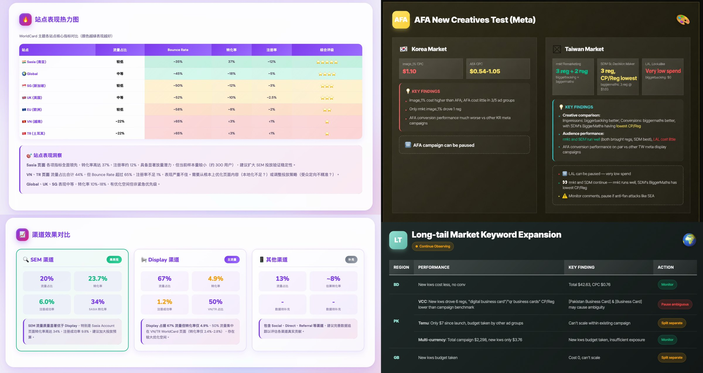
Built a dashboard through vibe coding to bring recurring paid media reporting into one clear, decision-ready view. I also developed reusable AI skills that automated data pulls and standardized routine reporting workflows.
The workflow reduced manual data collection and turned a process that previously took hours into one that could be completed in minutes, giving the team more time to focus on analysis and optimization.
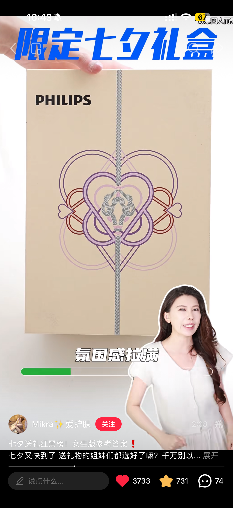
Developed a Valentine’s Day campaign that repositioned electric shavers within the gifting occasion. Audience intersections, creator selection, and scenario-led messaging helped Philips reach consumers beyond its core category audience.
Insight: Across markets, practical destination guides were most effective at engaging travelers already planning a trip.
Strategy: Launched “Trip Tips,” a repeatable social series built around seasonal demand, trending destinations, and a consistent visual format.
Result: The series outperformed other static posts and helped warm up high-intent audiences ahead of major promotions.
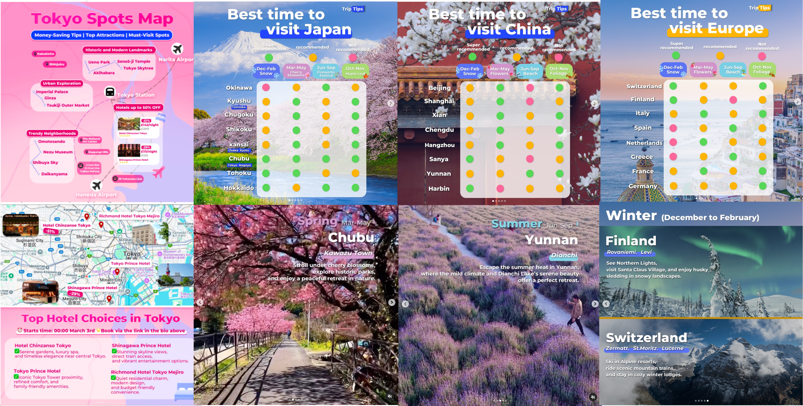
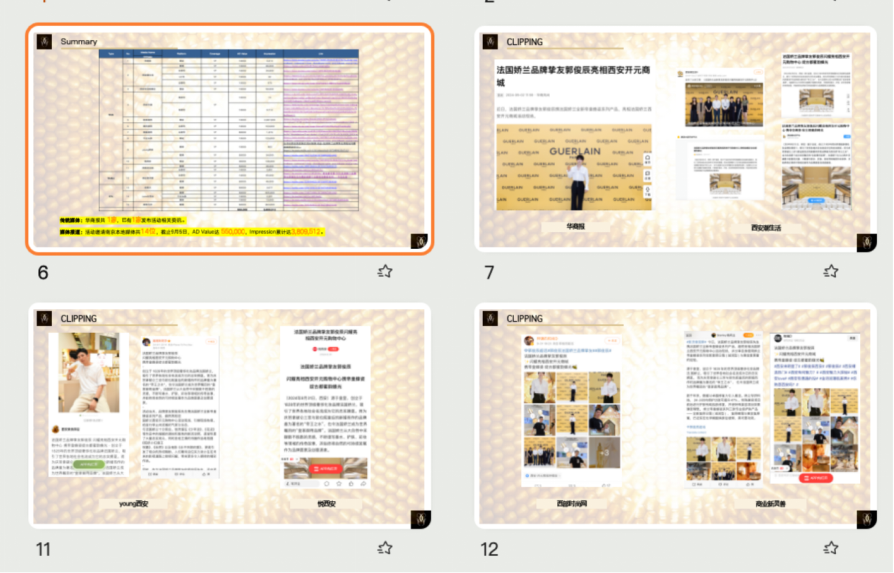


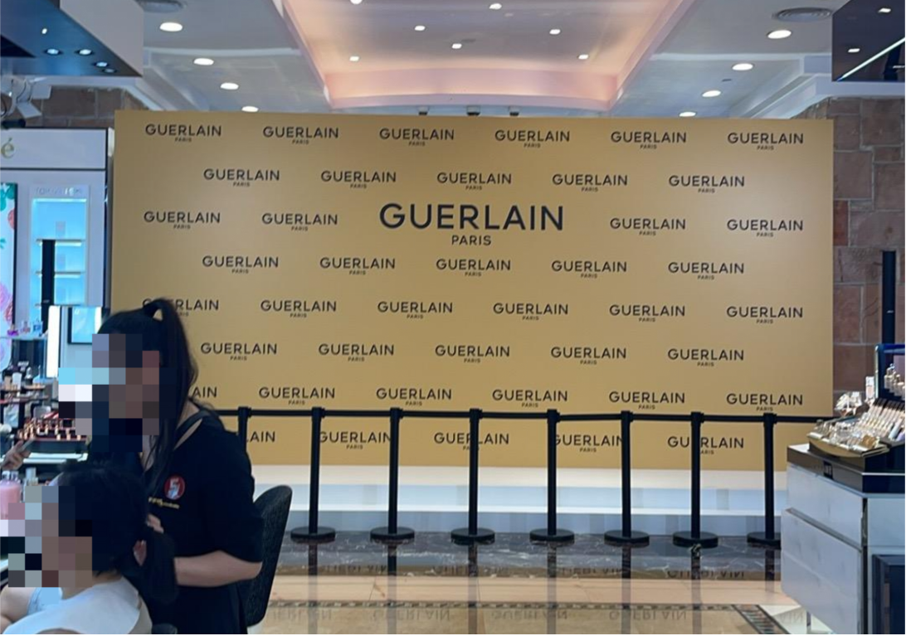
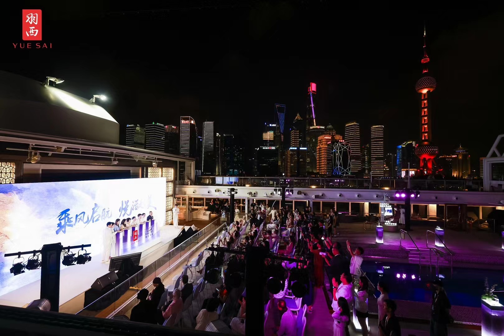
Supported the on-site delivery of luxury beauty events, including VIP gala dinners, roadshows, and branded consumer experiences. Responsibilities included production coordination, guest experience support, and alignment across client, venue, media, and influencer stakeholders.
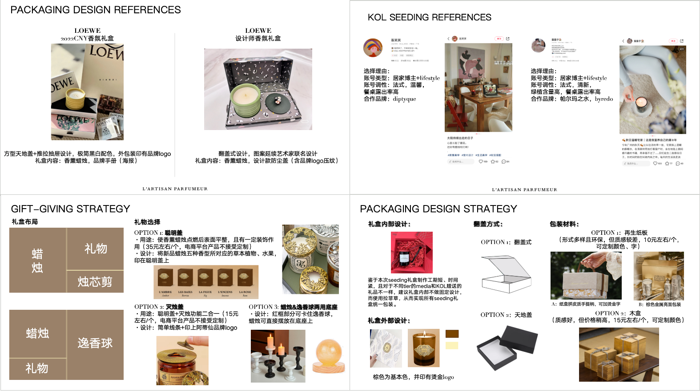
Supported L’Artisan Parfumeur’s new-product launch as the brand expanded its positioning from traditional French perfumery toward a broader French lifestyle identity.
Contributed across the launch workflow, including media-list development, press release support, influencer outreach, and gift-box design. I reviewed historical creator performance to refine influencer selection and conducted packaging case studies to shape the gift box strategy and visual direction. The recommendations were adopted as a reference for execution.

Mission Driven Tech (MDT) is a healthcare technology company focused on developing innovative brachytherapy devices for cervical and uterine cancers. It also aims to educate and raise awareness about cervical cancer through social media.
Developed a TikTok strategy grounded in audience research, content ecosystem analysis, and platform feature research. Translated those insights into an account and content plan designed to support cervical cancer awareness, patient education, and community trust-building, earning strong recognition from the client.
Research and decision support
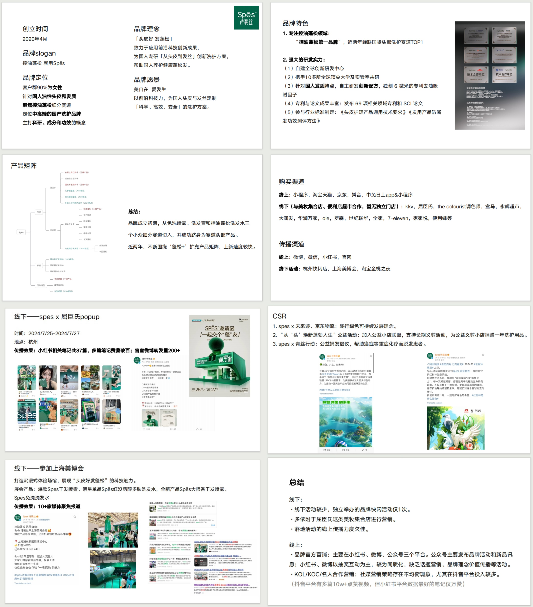
Produced a 20-page independent analysis of positioning, portfolio, channels, corporate social responsibility, and communications, with synthesized implications for brand decisions.

Used PEST, SWOT, consumer profiling, and competitive analysis to inform an integrated marketing recommendation. National Third Prize and Shanghai Second Prize.

Self-taught the required SPSS methods in one day, then cleaned and modeled survey data for a 12-page report supporting project strategy. First Prize in the university research competition.
From unmet need to go-to-market

Led research, concept development, and go-to-market planning for an AI-powered beard-shadow concealing device. Skin-tone detection enabled personalized shade matching for an underserved grooming need among Asian men.
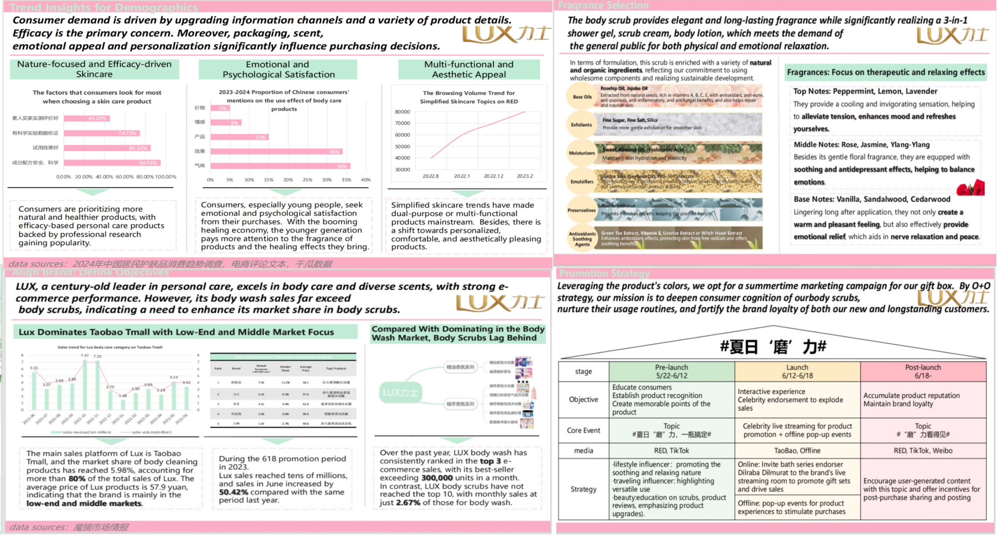
Combined interviews, survey findings, and category analysis to identify a body-scrub growth opportunity for Lux, then developed a sustainable product direction and integrated launch concept.
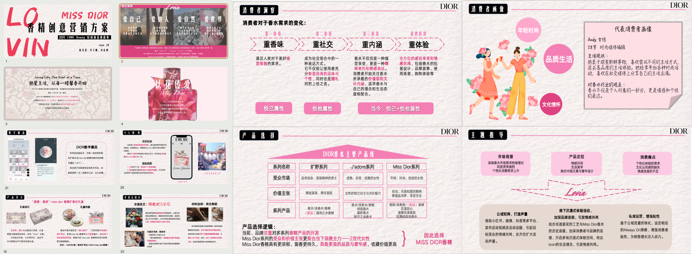
Analyzed category data, brand history, and consumer research to identify product and brand opportunities, translating the findings into product innovation and communications recommendations.
Team leadership and partnerships
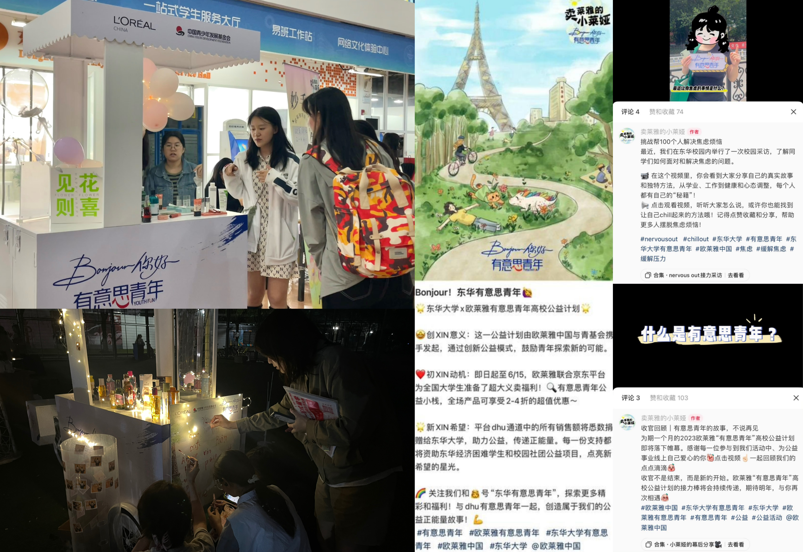
Led a 25-person team across social media, offline events, community channels, and charity commerce. Planned seven offline activations, partnered with 10 campus creators, and built a multi-channel content ecosystem.
Awards: Best Social Media Impact and Best Individual Contributor.


Built external partnerships and led sponsor-facing coordination for campus programming.